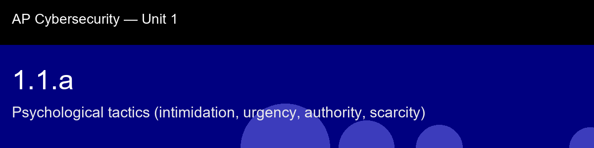

1.1.a, Psychological tactics (intimidation, urgency, authority, scarcity)
Before class today. Social engineering is the art of manipulating people into taking an action that benefits an
attacker, clicking a link, revealing a password, wiring money, or holding a door open. Unlike a
software exploit, which targets a flaw in code, social engineering targets predictable flaws in
human decision-making.
The intuition to hold onto: Here's the mental model worth keeping for the whole unit: every social-engineering message is an attempt to make you skip your own internal verification step. Urgency skips it by racing the clock. Authority skips it by outsourcing your judgment to someone else's. Scarcity skips it by turning verification into a cost ("if I check, I'll miss the deal"). Intimidation skips it by making not complying feel dangerous. Once you see all four as variations on one move, disable your slow, careful thinking, you stop needing to memorize scam templates, because the templates change every year but the move never does.
A myth worth busting before we start: "Only careless people fall for it." → Anyone under stress, time pressure, or distraction is vulnerable; tactics target universal psychology, not intelligence.
Today's goal: Identify the four core psychological pressure tactics in a social-engineering message and explain why each one lowers a victim's guard.
Handout: pre-lecture-handout.docx.

## 1.1.a, Psychological tactics (intimidation, urgency, authority, scarcity)
**Before class today.** Social engineering is the art of manipulating people into taking an action that benefits an
attacker, clicking a link, revealing a password, wiring money, or holding a door open. Unlike a
software exploit, which targets a flaw in code, social engineering targets predictable flaws in
**human decision-making**.
**The intuition to hold onto:** Here's the mental model worth keeping for the whole unit: every social-engineering message is an attempt to make you skip your own internal verification step. Urgency skips it by racing the clock. Authority skips it by outsourcing your judgment to someone else's. Scarcity skips it by turning verification into a cost ("if I check, I'll miss the deal"). Intimidation skips it by making *not* complying feel dangerous. Once you see all four as variations on one move, disable your slow, careful thinking, you stop needing to memorize scam templates, because the templates change every year but the move never does.
**A myth worth busting before we start:** "Only careless people fall for it." → Anyone under stress, time pressure, or distraction is vulnerable; tactics target universal psychology, not intelligence.
**Today's goal:** Identify the four core psychological pressure tactics in a social-engineering message and explain *why* each one lowers a victim's guard.
Handout: `pre-lecture-handout.docx`.